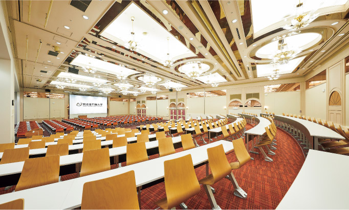
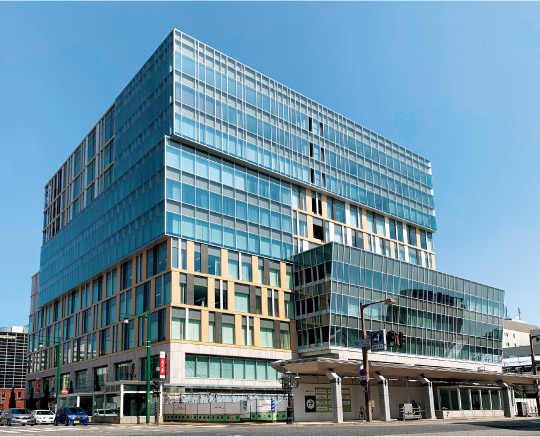
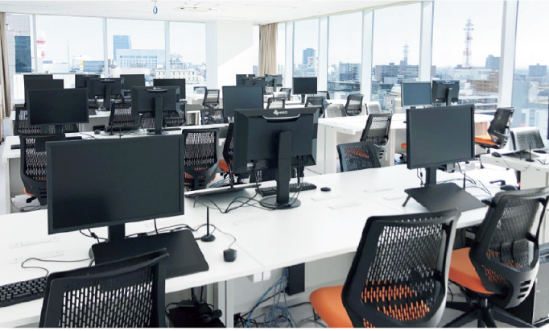
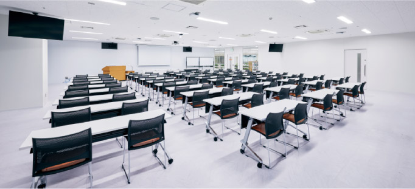
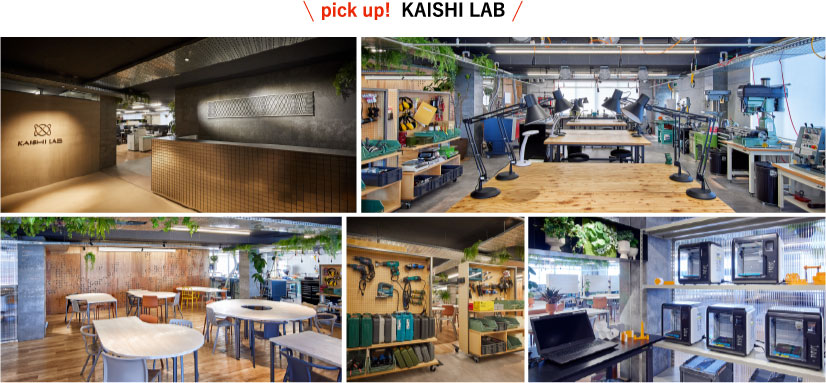
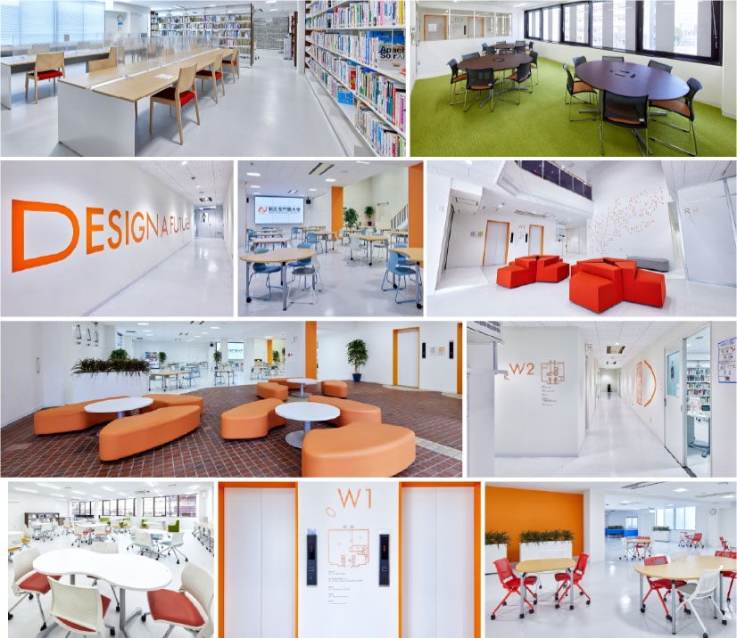
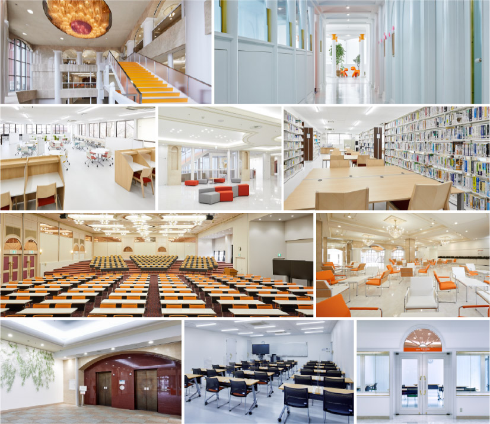
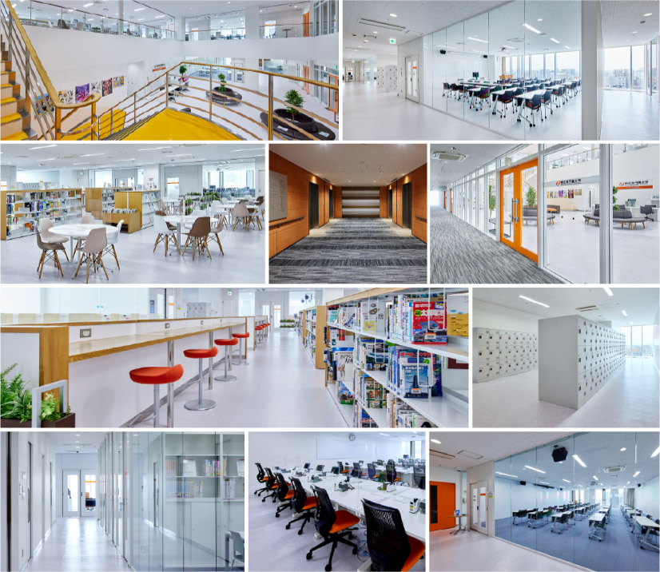

開志専門職大学
情報学部
社会をデザイン
１年次から取り組む高度な専門科目によって情報技術の専門知識を高め、確かなスキルを身につけることで、活躍する未来のデザインが始まります。
長期企業内実習などの実践的なカリキュラムを通じて経験を積み、未来の方向性を現場から探ることで、確かなキャリアデザインが可能になります。
事業創造学部
事業創造できる人へ
理論と実践を学び、新しい価値やビジネスを想像する力をつけることができます。
「経営管理」「マーケティング＆セールス」「会計」を軸に、 ICT活用や地域資源活用、課題解決能力を幅広く養うことができます。

アニメ・マンガ学部
まだ誰も見たことがない未来
あなたは多くのライバルに恵まれ、強い刺激を受け、自分の想像を超える成長を遂げることになるでしょう。
デジタルネイティブ、SNSネイティブ世代に生きる感性と表現力で、これからの時代をリードするプロフェッショナルになりましょう。



ギャラリー
←KAISHILAB
紫竹山キャンパス→
古町ルフルキャンパス→
←米山キャンパス




アクセス
| キャンパス名 |
住所 |
Googleマップ |
| 米山キャンパス |
新潟市中央区米山3丁目1番53号 |
|
| 紫竹山キャンパス |
新潟市中央区紫竹山6丁目3番5号 |
|
| 古町ルフルキャンパス |
新潟市中央区古町7番町1010番 |
|